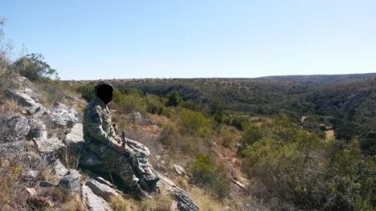

Wrong place, Wrong time
A million things start flying through your mind when you are moving towards trouble

Nothing breaks the silence of the night like the crackling of leaves and small twigs underfoot as you try to pick your way towards a vantage point.
Once settled in and satisfied I would not be seen and was not heard, the wait would begin, sometimes you will get lucky and your plan comes together, most of the time you just lay in the dirt for 6-8 hours.
As I lay there, watching the fence line through the internment fog that rose with each breath, my mind started to wonder about the going ons around town, the recent strike action in town had left everyone feeling on edge.
Every day now for near on two weeks the roads have been barricaded with boulders, burning car tyres and even a delivery truck was stopped, the driver forced out before it too was torched and added to the ever-growing trail of destruction.
When would all of this pass I wondered.
I was snapped back into reality, by the sound of gunshots being fired, from what i could tell it was at least two or three kilometres away,somewhere towards the main road passing the wildlife estate.
A million things start flying through your mind when you are moving towards trouble, it is not something you should run blindly into, but it is no easy task keeping your mind at bay.
For those who do not know, protests and strikes in South Africa can turn shockingly violent in a very short time.
Now as to what inspired this action or reaction during the time is not known to me and so I shall not be going into the whys of the scenario, this is merely an account of my encounter that night.
After a series of phone calls and radio chatter, I find out that this is part of the ongoing strike action,that is currently blocking the main road to a local mine, that also happens to be bordering the estate.
The shots I heard had come from some of the strikers who had armed themselves with a variety of rifles and pistols and had begun shooting at vehicles trying to get to the mine.
They had even been targeting marked security personal and vehicles. The shooting had grown more frequent with the few minutes that had passed.
One of the houses on the estate that was close to the road had by now activated their emergency alarm, and the security company was now unable reach this house without going through the strikers, whom as previously mentioned had already open fire on the security vehicles.
This just happened to be the same security company I worked for at the time. I had with my a work radio overheard the exchange between personal on duty explaining they could not reach the property. Only a few seconds later my phone rang, it was the control room, by the time the call ended I had already covered half the distance there.
Thankfully when I arrived all was well, the shooting continued, close by, but so far everyone was safe.
A few of the residents had gathered to keep an eye on the commotion, it was at this stage myself and two other men thought it would be best to get closer to make sure the strikers did not turn their attention towards the estate or accidentally burn it down.
We had stopped our vehicles with a thicket line and a donga(gully) between us and the strikers as we did not want to draw unwanted attention with the lights.
As we started to make our way slowly towards them, we began to hear them shouting to each other, organising themselves, the air was thick with heavy black smoke from coming from the tyres and various other debris that had been set alight.
As we were reaching the crest of the gully closest to the strikers, we could make out the sound and the lights of a vehicle approaching the blockade, what then happened must have taken no more than a few minutes, it sure felt a lot longer.
As the vehicle continued its approach we could hear shouts from across the road “shaya shaya” which directly translates to “hit hit”.
The night erupted in a series of loud bursts of gunfire, myself and the two other men dove to the ground and crawled to the nearest cover we could find, a shallow rutt that had been washed away by the rain, as we all slid and rolled into this rutt we could hear the rounds passing just above our small hollow of safety, as we lay there we all knew we had to get out of there, the problem now is that we are pinned down.
The unmistakable half whistle half buzz sound a bullet makes when it passes close by, it’s the kind of sound that makes your mouth go dry and stomach turn into a knot, not a sound one forgets too quickly, nor is there a desire to be hearing it again.
We quietly decided between us that we would wait for the next reload and then run like hell for the safety off our vehicles.
So there I lay, watching the grass just above us flicking with each bullet that passed narrowly over head, some embedding themselves in the mudbank just inches above our scrape, I could not help but wonder why I am forever getting myself in trouble.
Our moment finally arrived, the shots stopped and without a second guess, all three of us were up and out, crouching as low as possible but at a full run down a small two-track road back to the vehicles.
We moved fast but not fast enough, the shooting has once again commenced but alas we had gone too far now to turn back.
As the bullets started to whip past us again impacting in the thickets around us we dove onto our bellys but did not stop, we leopard crawled until we could no longer hear the singing of metal overhead and we were finally able to make it back to our vehicles.
Sitting together later on, with a shakey cup of coffee and a ciggarette, we all went through what just happened.
Bad timing and very good luck we all went home, although I can’t say if any of us slept much that night.
It is a night that won’t be soon forgotten.